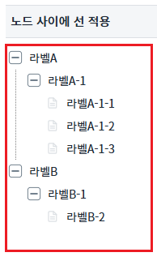
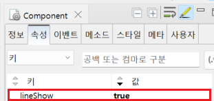

[TreeView] 각 노드 사이에 선을 적용하기
1개요
Treeview의 'lineShow' 속성을 사용하여 각 노드 사이에 선을 설정하는 예제입니다.
2구현된 기능
노드 사이에 선 미적용
노드 사이에 선 적용
3예제 테스트 방법
3.1노드 사이에 선 미적용
1
STEP 1: 예제영역 '노드 사이에 선 미적용'에서 결과를 확인합니다.
Treeview에 구분 선이 없는 것을 확인할 수 있습니다.
Image 1.브라우저(Chrome) 실행 예시

3.2노드 사이에 선 적용
1
STEP 1: 예제영역 '노드 사이에 선 적용'에서 결과를 확인합니다.
'라벨A'와 '라벨B' 사이에 구분 선이 생긴 것을 확인할 수 있습니다.
Image 2.브라우저(Chrome) 실행 예시

4구현 예시
4.1사용자 툴팁 설정하기
1
Treeview의 속성을 정의합니다.
[필수] lineShow="true"
(옵션 설명)
lineShow속성이 true일 depth = 1의 노드를 구분선으로 나타낸다.
Image 3.웹스퀘어 스튜디오의 Component View 예시

Example 1.Source
<!-- Treeview 의 소스 본문 예시 --> <w2:treeview lineShow="true"> <!-- 중략 --> </w2:treeview>
5주요 API
lineShow